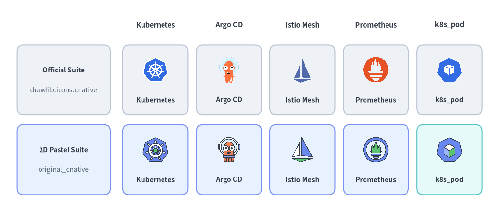
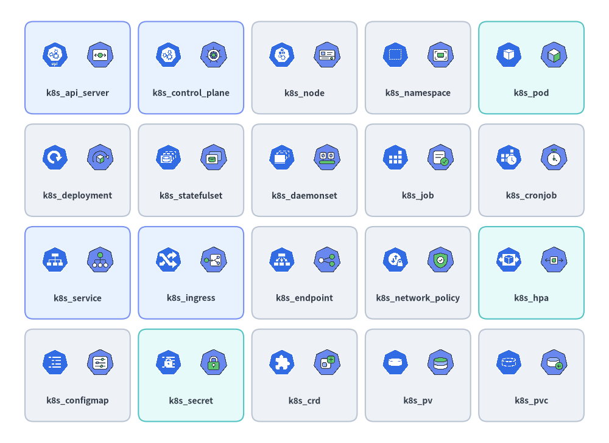
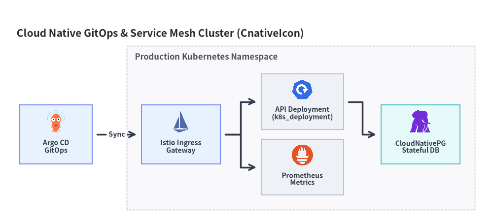

Cloud Native (K8s) Icons
Drawlib provides 73 official CNCF & Kubernetes icons in drawlib.icons.cnative (CnativeIcon) and 73 matching 2D pastel twin icons in drawlib.icons.original_cnative (OriginalCnativeIcon). Both suites include 53 Cloud Native project brands and 20 k8s_* Kubernetes workload, networking, and storage resource icons for use in standalone illustrations or Architecture Diagrams (see Icons Overview).

Source Code
from drawlib.canvas import save, setup
from drawlib.icons import cnative, original_cnative
from drawlib.shapes import rectangle
from drawlib.styles import Styles
from drawlib.text import text
setup(width=146, height=64)
columns = [
("Kubernetes", cnative.kubernetes, original_cnative.kubernetes),
("Argo CD", cnative.argo, original_cnative.argo),
("Istio Mesh", cnative.istio, original_cnative.istio),
("Prometheus", cnative.prometheus, original_cnative.prometheus),
("k8s_pod", cnative.k8s_pod, original_cnative.k8s_pod),
]
rows = [
(40.0, "Official Suite", "drawlib.icons.cnative", Styles.Neutral),
(16.0, "2D Pastel Suite", "original_cnative", Styles.PrimaryNeutral),
]
for col_idx, (col_title, _, _) in enumerate(columns):
cx = 46.5 + col_idx * 22.0
text((cx, 56.5), col_title, style=Styles.DarkBold.patch(text_size=10.5))
for row_idx, (cy, row_title, row_sub, card_st) in enumerate(rows):
rectangle((19.0, cy), width=28.0, height=21.0, style=card_st.patch(shape_r=2))
text((19.0, cy + 3.0), row_title, style=Styles.DarkBold.patch(text_size=10.0))
text((19.0, cy - 3.0), row_sub, style=Styles.Muted.patch(text_size=10.0))
for col_idx, (lbl, fn_off, fn_orig) in enumerate(columns):
cx = 46.5 + col_idx * 22.0
cell_st = Styles.SecondaryNeutral if (row_idx == 1 and col_idx == 4) else card_st
rectangle((cx, cy), width=19.5, height=21.0, style=cell_st.patch(shape_r=2))
fn = fn_off if row_idx == 0 else fn_orig
fn((cx, cy + 3.0), width=8.5, style=Styles.Primary)
text((cx, cy - 6.0), lbl, style=Styles.DarkBold.patch(text_size=10.0))
save()
1. API Signature & Twin Module Structure
Every icon in drawlib.icons.cnative has an exact 1-to-1 twin with the same function name in drawlib.icons.original_cnative. Both modules use Drawlib's standard center-anchored (cx, cy) signature:
from drawlib.diagrams.architecture import CnativeIcon, Node, OriginalCnativeIcon
from drawlib.icons import cnative, original_cnative
from drawlib.styles import Styles
# 1. Direct canvas rendering (anchored at center xy)
cnative.kubernetes((30, 25), width=10.0, style=Styles.Primary)
original_cnative.kubernetes((60, 25), width=10.0, style=Styles.Primary)
# 2. High-level ArchitectureDiagram Node integration via Enum
k8s_node = Node("Prod Cluster", icon=CnativeIcon.KUBERNETES, icon_size=8.0)
pod_node = Node("Worker Pod", icon=OriginalCnativeIcon.K8S_POD, icon_size=8.0)
| Feature | Official Suite (cnative) |
Original 2D Pastel Suite (original_cnative) |
|---|---|---|
| Module Import | from drawlib.icons import cnative |
from drawlib.icons import original_cnative |
| Function Signature | cnative.<name>(xy, width, *, style, variant="default") |
original_cnative.<name>(xy, width, *, style, variant="default") |
| Architecture Enum | CnativeIcon.<NAME> |
OriginalCnativeIcon.<NAME> |
| Canonical Count | 73 (53 CNCF/project brands + 20 k8s_* resources) |
73 (53 2D pastel brand twins + 20 k8s_* resources) |
| Asset Archive | icon_cnative (512×512 RGBA PNGs) |
icon_original_cnative (512×512 RGBA PNGs) |
2. Cloud Native Brand & CNCF Project Icons (53 Icons)
The 53 project icons cover container runtimes, Kubernetes distributions, GitOps controllers, service meshes, CNI plugins, cloud-native storage operators, and observability/policy engines:
Source Code
from drawlib.canvas import save, setup
from drawlib.icons import cnative
from drawlib.shapes import rectangle
from drawlib.styles import Styles
from drawlib.text import text
setup(width=144, height=64)
row1 = [
("kubernetes", "Orchestration", cnative.kubernetes, Styles.PrimaryNeutral),
("docker", "Runtime", cnative.docker, Styles.Neutral),
("helm", "Packaging", cnative.helm, Styles.Neutral),
("argo", "GitOps CD", cnative.argo, Styles.SecondaryNeutral),
("istio", "Service Mesh", cnative.istio, Styles.Neutral),
]
row2 = [
("cilium", "eBPF CNI", cnative.cilium, Styles.Neutral),
("envoy", "Edge Proxy", cnative.envoy, Styles.Neutral),
("prometheus", "Metrics", cnative.prometheus, Styles.PrimaryNeutral),
("grafana", "Dashboards", cnative.grafana, Styles.Neutral),
("opentelemetry", "Telemetry", cnative.opentelemetry, Styles.SecondaryNeutral),
]
for row_idx, items in enumerate([row1, row2]):
cy = 46.5 if row_idx == 0 else 17.5
for col_idx, (title, cat, icon_fn, card_st) in enumerate(items):
cx = 18.0 + col_idx * 27.0
rectangle((cx, cy), width=24.5, height=25.0, style=card_st.patch(shape_r=2))
icon_fn((cx, cy + 4.5), width=8.5, style=Styles.Primary)
text((cx, cy - 3.5), title, style=Styles.DarkBold.patch(text_size=10.0))
text((cx, cy - 8.2), cat, style=Styles.Muted.patch(text_size=10.0))
save()
2.1. Complete Brand & Project Icons Reference (53 Canonical Names)
All 53 canonical project names below are available in both cnative.<name> (CnativeIcon.<NAME>) and original_cnative.<name> (OriginalCnativeIcon.<NAME>):
| Category | Count | Canonical Icon Names (cnative.* & original_cnative.*) |
|---|---|---|
| Kubernetes Distributions, Runtimes & Cluster Management | 14 | containerd, docker, k0s, k3s, kind, kubernetes, microk8s, minikube, okd, openshift, rancher, talos, tanzu, vcluster |
| GitOps, Packaging, Autoscaling & Platform Engineering | 11 | argo, backstage, crossplane, flux, helm, karpenter, keda, knative, kubevirt, kustomize, temporal |
| Service Mesh, CNI Networking & Edge Proxies | 7 | calico, cilium, coredns, envoy, istio, linkerd, metallb |
| Cloud Native Storage, Databases & Messaging Operators | 8 | ceph, cloudnative_pg, etcd, longhorn, rook, strimzi, velero, vitess |
| Observability, Security, Identity & Policy Engines | 13 | cert_manager, dapr, external_secrets, falco, fluentd, grafana, harbor, jaeger, kyverno, opa, opentelemetry, prometheus, spiffe |
3. Kubernetes Resource Icons (k8s_* — 20 Icons)
In addition to project logos, both cnative and original_cnative provide 20 dedicated Kubernetes resource icons prefixed with k8s_* for modeling internal cluster topologies. Every card below renders the official cnative.k8s_* icon on the left and its original_cnative.k8s_* 2D pastel twin on the right:

Source Code
from drawlib.canvas import save, setup
from drawlib.icons import cnative, original_cnative
from drawlib.shapes import rectangle
from drawlib.styles import Styles
from drawlib.text import text
setup(width=148, height=108)
k8s_items = [
("k8s_api_server", cnative.k8s_api_server, original_cnative.k8s_api_server, Styles.PrimaryNeutral),
("k8s_control_plane", cnative.k8s_control_plane, original_cnative.k8s_control_plane, Styles.PrimaryNeutral),
("k8s_node", cnative.k8s_node, original_cnative.k8s_node, Styles.Neutral),
("k8s_namespace", cnative.k8s_namespace, original_cnative.k8s_namespace, Styles.Neutral),
("k8s_pod", cnative.k8s_pod, original_cnative.k8s_pod, Styles.SecondaryNeutral),
("k8s_deployment", cnative.k8s_deployment, original_cnative.k8s_deployment, Styles.Neutral),
("k8s_statefulset", cnative.k8s_statefulset, original_cnative.k8s_statefulset, Styles.Neutral),
("k8s_daemonset", cnative.k8s_daemonset, original_cnative.k8s_daemonset, Styles.Neutral),
("k8s_job", cnative.k8s_job, original_cnative.k8s_job, Styles.Neutral),
("k8s_cronjob", cnative.k8s_cronjob, original_cnative.k8s_cronjob, Styles.Neutral),
("k8s_service", cnative.k8s_service, original_cnative.k8s_service, Styles.PrimaryNeutral),
("k8s_ingress", cnative.k8s_ingress, original_cnative.k8s_ingress, Styles.PrimaryNeutral),
("k8s_endpoint", cnative.k8s_endpoint, original_cnative.k8s_endpoint, Styles.Neutral),
("k8s_network_policy", cnative.k8s_network_policy, original_cnative.k8s_network_policy, Styles.Neutral),
("k8s_hpa", cnative.k8s_hpa, original_cnative.k8s_hpa, Styles.SecondaryNeutral),
("k8s_configmap", cnative.k8s_configmap, original_cnative.k8s_configmap, Styles.Neutral),
("k8s_secret", cnative.k8s_secret, original_cnative.k8s_secret, Styles.SecondaryNeutral),
("k8s_crd", cnative.k8s_crd, original_cnative.k8s_crd, Styles.Neutral),
("k8s_pv", cnative.k8s_pv, original_cnative.k8s_pv, Styles.Neutral),
("k8s_pvc", cnative.k8s_pvc, original_cnative.k8s_pvc, Styles.Neutral),
]
for idx, (label, fn_off, fn_orig, card_st) in enumerate(k8s_items):
row = idx // 5
col = idx % 5
cx = 18.8 + col * 27.6
cy = 91.5 - row * 25.0
rectangle((cx, cy), width=25.6, height=22.5, style=card_st.patch(shape_r=2))
fn_off((cx - 5.5, cy + 3.2), width=7.2, style=Styles.Primary)
fn_orig((cx + 5.5, cy + 3.2), width=7.2, style=Styles.Primary)
text((cx, cy - 6.2), label, style=Styles.DarkBold.patch(text_size=10.0))
save()
3.1. Complete k8s_* Resource Icons Reference (20 Canonical Names)
| Canonical Name | Official Call (cnative) |
2D Pastel Call (original_cnative) |
CnativeIcon / OriginalCnativeIcon Enum |
Kubernetes Resource Kind & Architectural Role |
|---|---|---|---|---|
k8s_api_server |
cnative.k8s_api_server |
original_cnative.k8s_api_server |
K8S_API_SERVER |
kube-apiserver control plane gateway |
k8s_configmap |
cnative.k8s_configmap |
original_cnative.k8s_configmap |
K8S_CONFIGMAP |
ConfigMap non-confidential configuration data |
k8s_control_plane |
cnative.k8s_control_plane |
original_cnative.k8s_control_plane |
K8S_CONTROL_PLANE |
Kubernetes control plane (scheduler, controller-manager) |
k8s_crd |
cnative.k8s_crd |
original_cnative.k8s_crd |
K8S_CRD |
CustomResourceDefinition operator API extension |
k8s_cronjob |
cnative.k8s_cronjob |
original_cnative.k8s_cronjob |
K8S_CRONJOB |
CronJob time-scheduled batch workload |
k8s_daemonset |
cnative.k8s_daemonset |
original_cnative.k8s_daemonset |
K8S_DAEMONSET |
DaemonSet node-level background agent |
k8s_deployment |
cnative.k8s_deployment |
original_cnative.k8s_deployment |
K8S_DEPLOYMENT |
Deployment stateless replica controller |
k8s_endpoint |
cnative.k8s_endpoint |
original_cnative.k8s_endpoint |
K8S_ENDPOINT |
Endpoints / EndpointSlice network target IP list |
k8s_hpa |
cnative.k8s_hpa |
original_cnative.k8s_hpa |
K8S_HPA |
HorizontalPodAutoscaler dynamic replica scaling |
k8s_ingress |
cnative.k8s_ingress |
original_cnative.k8s_ingress |
K8S_INGRESS |
Ingress L7 HTTP/HTTPS routing rules |
k8s_job |
cnative.k8s_job |
original_cnative.k8s_job |
K8S_JOB |
Job run-to-completion batch task |
k8s_namespace |
cnative.k8s_namespace |
original_cnative.k8s_namespace |
K8S_NAMESPACE |
Namespace virtual cluster boundary |
k8s_network_policy |
cnative.k8s_network_policy |
original_cnative.k8s_network_policy |
K8S_NETWORK_POLICY |
NetworkPolicy L3/L4 pod firewall rules |
k8s_node |
cnative.k8s_node |
original_cnative.k8s_node |
K8S_NODE |
Node worker VM or bare-metal kubelet host |
k8s_pod |
cnative.k8s_pod |
original_cnative.k8s_pod |
K8S_POD |
Pod atomic co-located container group |
k8s_pv |
cnative.k8s_pv |
original_cnative.k8s_pv |
K8S_PV |
PersistentVolume cluster storage volume |
k8s_pvc |
cnative.k8s_pvc |
original_cnative.k8s_pvc |
K8S_PVC |
PersistentVolumeClaim pod storage mount request |
k8s_secret |
cnative.k8s_secret |
original_cnative.k8s_secret |
K8S_SECRET |
Secret encrypted credentials, TLS keys, and tokens |
k8s_service |
cnative.k8s_service |
original_cnative.k8s_service |
K8S_SERVICE |
Service stable ClusterIP / LoadBalancer virtual IP |
k8s_statefulset |
cnative.k8s_statefulset |
original_cnative.k8s_statefulset |
K8S_STATEFULSET |
StatefulSet ordered stateful workload controller |
4. Practical Architecture Diagram (CnativeIcon & OriginalCnativeIcon)
The following ArchitectureDiagram combines CNCF project icons (Argo, Istio, CloudNativePG, Prometheus) with Kubernetes resource icons (K8S_INGRESS, K8S_SERVICE, K8S_DEPLOYMENT, K8S_PVC) inside a production cluster boundary:
from drawlib.canvas import save, setup
from drawlib.diagrams.architecture import ArchitectureDiagram, CnativeIcon, Node, NodeGroup
from drawlib.styles import Styles
setup(width=150, height=68)
d = ArchitectureDiagram(
node_style=Styles.Primary,
node_text_style=Styles.DarkBold.patch(text_size=10.0),
edge_style=Styles.DarkBold,
edge_text_style=Styles.DarkBold.patch(text_size=10.0),
node_card_style=Styles.Neutral,
title="Cloud Native GitOps & Service Mesh Cluster (CnativeIcon)",
)
argo = d.add(
Node(
"Argo CD\nGitOps",
width=22,
height=18,
icon=CnativeIcon.ARGO,
icon_size=7.5,
card_style=Styles.PrimaryNeutral,
),
xy=(13.0, 23.0),
)
cluster = d.add(NodeGroup(title="Production Kubernetes Namespace", padding=4.5), xy=(36.0, 4.0))
ing = cluster.add(
Node(
"Istio Ingress\nGateway",
width=24,
height=18,
icon=CnativeIcon.ISTIO,
icon_size=7.5,
card_style=Styles.PrimaryNeutral,
),
xy=(15.0, 19.0),
)
deploy = cluster.add(
Node(
"API Deployment\n(k8s_deployment)",
width=25,
height=17,
icon=CnativeIcon.K8S_DEPLOYMENT,
icon_size=7.2,
),
xy=(52.0, 29.0),
)
prom = cluster.add(
Node(
"Prometheus\nMetrics",
width=25,
height=17,
icon=CnativeIcon.PROMETHEUS,
icon_size=7.2,
),
xy=(52.0, 9.0),
)
cnpg = cluster.add(
Node(
"CloudNativePG\nStateful DB",
width=24,
height=18,
icon=CnativeIcon.CLOUDNATIVE_PG,
icon_size=7.5,
card_style=Styles.SecondaryNeutral,
),
xy=(88.0, 19.0),
)
d.connect(argo, ing, label="Sync", padding=1.5)
d.connect(ing, deploy, padding=1.5)
d.connect(ing, prom, padding=1.5)
d.connect(deploy, cnpg, padding=1.5)
d.draw(xy=(4.0, 4.0))
save()

[!TIP] For CI/CD pipelines, Infrastructure as Code (Terraform, OpenTofu, Ansible), and APM platforms, see DevOps & Observability Icons. For physical/virtual routers, firewalls, and L2/L3 switches, see Network & Cisco Topology Icons.